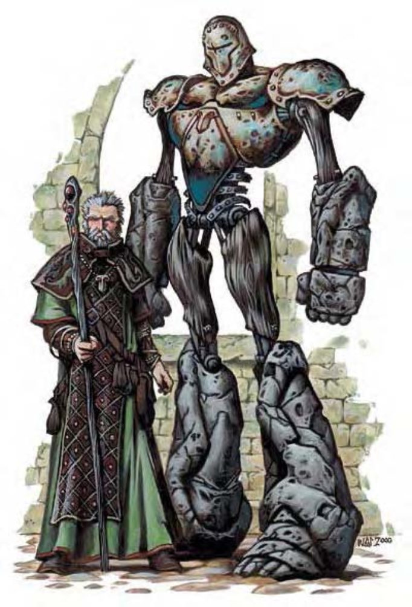

由木、石、金属构成，外形像是附有肢体的巨杖，大小约与食人魔相当。
盾卫是施法者制造出来的保镖，这种构装生物会以法术与耐力守护他们的主人。
构装完工后，盾卫会与一个特定护符绑定。之后，盾卫会将任何配戴该护符的人视作主人，随时随地跟随并保护他（除非接到无须跟随或保护的命令）。
盾卫会尽力遵循主人的言语命令，虽然他只擅长战斗与简单的劳力。他也可被安排在特定时间或特定情况下执行特定工作。只要在同一个界域，护符的配戴者都可以随时呼唤盾卫，无论相隔多远，他都会立即赶来。
盾卫约9英尺高，体重超过1200吨。
盾卫不会说话，但可使用任何语言对他下令。
| 资料栏位 | 盾卫 (Shield Guardian) 大型构装生物 |
| 生命骰 | 15d10+30 (112HP) |
| 先攻 | +0 |
| 速度 | 30英尺 (6格) |
| 防御等级 | 24 (-1体型、+15天生)、接触9、措手不及24 |
| 基本攻击/擒抱 | +11 / +21 |
| 攻击 | 挥击+16近战 (1d8+6) |
| 全力攻击 | 2挥击+16近战 (1d8+6) |
| 占据/触及 | 10英尺 / 10英尺 |
| 特殊攻击 | ― |
| 特殊能力 | 构装特性、黑暗视觉60英尺、快速医疗5、寻主、守护、昏暗视觉、“护卫他人”、“圈法” |
| 豁免 | 强韧+5、反射+5、意志+5 |
| 属性 | 力量22、敏捷10、体质―、智力―、感知10、魅力1 |
| 环境 | 任何 |
| 组织 | 单独 |
| 宝藏 | 无 |
| 阵营 | 总是绝对中立 |
| 进化 | 16-24HD (大型)；25-45HD (超大型) |
| 等级修正值 | ― |
盾卫的战法是直来直往，用沉重的石拳殴打对手。他们为了防御而生，所以在攻击中并不出色。
寻主 (超自然)：只要在同一界域，无论距离有多远，盾卫都能找到护符的配戴者。如果护符在召唤盾卫之后被摘下，则盾卫到达时只会找到护符。
守护 (特异)：如果被下令进行守护，盾卫会迅速移动以护卫护符配戴者，阻挡并扰乱敌人。当与盾卫邻接时，所有针对护符配戴者的攻击都遭受-2减值。
“护卫他人” (类法术能力)：护符配戴者可在离盾卫100英尺的距离内启动这项防卫能力。与同名法术类似，此能力会将二分之一的伤害转由盾卫承受，但不具有原法术的AC或豁免检定加值。
“圈法” (类法术能力)：盾卫上可由其他生物囤入一个四级以下法术，收到命令或满足触发条件时，盾卫即可“施展”该法术。施展后即可再囤入另一法术。
盾卫是由木头、青铜、石头与钢铁打造而成，材料费5000金币。盾卫的主人可自行制作或雇人订制。组装身体时需要通过“手艺 (铁匠)”或“手艺 (木工)”检定 (DC=16)。护符同时制成，材料费20000金币须计入盾卫的制造成本。身体成形后，盾卫还需要魔法仪式来使之活动。完成此仪式必须花费500金币，并在一个特别准备的实验室或工作室进行，有点类似炼金师的实验室。如果制造者自行打造盾卫，则制作与仪式可同时进行。
盾卫制成时可拥有的生命骰可超过15，但每超过一个生命骰，其市场价格增加5000金币。若体型增至超大型，则价格增加20000金币，并依此调整制作成本。
挑战级数：15；制造构装生物 (见第318页)，“有限愿望术”、“感知位置”、“护盾术”、“护卫他人”。施法者等级至少15；交易价格120000金币；制造耗费65000金币+4600XP。
如果盾卫的护符被摧毁，盾卫会停止动作，直到新的护符被制作出来。如果配戴者死亡但护符没有损伤，则盾卫会遵循最后收到的命令。